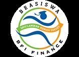

Program Beasiswa S1 BFI
Program Beasiswa S1 BFI sudah berjalan sejak tahun 2004. Program ini merupakan salah satu perwujudan komitmen Perusahaan untuk mendukung pengembangan pendidikan di Indonesia, khususnya mahasiswa perguruan tinggi.
Persyaratan:
• Mahasiswa - wanita dan pria semua jurusan (lebih disukai dari Jurusan Ekonomi - semua program studi), saat ini sedang berada di semester 4 - 8
• Memiliki minimum nilai IPK 3,00 dari 4,00 selama 3 (tiga) semester terakhir berturut-turut
• Tidak menerima beasiswa dalam bentuk apapun dari institusi lain

Beasiswa S1 BFI adalah beasiswa dengan Jaminan Bekerja.
Penerima beasiswa berhak menerima paket lengkap pembayaran biaya kuliah, uang saku dan tunjangan lainnya hingga akhir masa perkuliahan. Setelah menyelesaikan perkuliahan, penerima beasiswa akan langsung mendapatkan jaminan bekerja di BFI dan menjadi peserta dalam Management Trainee Program (MTP).
Manfaat:
• Jaminan bekerja setelah lulus kuliah
• Pembayaran biaya kuliah dimulai dari saat program beasiswa dimulai hingga semester ke-9
• Pembayaran biaya tugas akhir (skripsi)
• Uang saku untuk setiap semester
• Insentif tambahan untuk peraih IPK tertentu
• Kesempatan magang di BFI
TANYA JAWAB SEPUTAR PROGRAM BEASISWA S1 BFI
Kapan BFI membuka pendaftaran online untuk Program Beasiswa S1?
Pendaftaran online akan diumumkan melalui papan buletin universitas, media sosial dan website BFI.
Bagaimana prosedur pendaftaran dari Program Beasiswa S1?
Pertama, mengisi formulir pendaftaran online yang tersedia pada website BFI. Kedua, ikuti serangkaian tes dan wawancara. Hasil seleksi akan diinformasikan kepada kandidat penerima beasiswa melalui SMS dan website BFI.
Apa yang diperlukan untuk pendaftaran Program Beasiswa S1?
Upload fotokopi kartu identitas dan foto diri ukuran 3x4 dengan format .jpeg pada format pendaftaran online yang tersedia di website BFI.
Apakah saya masih dapat mendaftarkan diri jika kampus saya tidak termasuk dalam daftar universitas rekanan BFI?
Ya. Program Beasiswa S1 BFI tersedia untuk semua mahasiswa dari berbagai jurusan universitas di seluruh Indonesia.
Berapa ukuran maksimum dokumen yang diperlukan pada formulir pendaftaran online?
Ukuran maksimum dokumen adalah 300 KB.